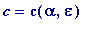
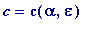
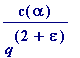
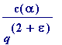
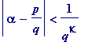
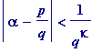
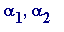
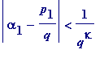
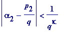
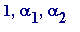

Klaus Friedrich Roth (1925- )
Roth's Theorem (1955, settling Siegel's conjecture). Let
 be any real algebraic number of degree
n
(
at least
3), and let
be any real algebraic number of degree
n
(
at least
3), and let
 be any positive constant, then there is a positive constant

(i.e. the value of
c
depends
only
on
be any positive constant, then there is a positive constant

(i.e. the value of
c
depends
only
on
 and
and
 ) such that
) such that
 >

>

That was not how Roth himself expressed his result; he expressed it (equivalently) as follows:
Let
 be any real irrational algebraic number. If the inequality

(where
be any real irrational algebraic number. If the inequality

(where
 is a constant) has an infinite number of solutions in integers
p
and
q
(with
) then
.
is a constant) has an infinite number of solutions in integers
p
and
q
(with
) then
.
______________
In his address at the 1958 International Congress of Mathematicians - held in Edinburgh, at which Roth was awarded one of the two Fields Medals - Harold Davenport commented:
The achievement [of Roth] is one that speaks for itself: it closes a chapter, and a new chapter is now opened [although Davenport didn't enlarge, he must have intended the problem of simultaneous approximations, of which Roth himself spoke in his own address to the Congress, and which was later settled - partially in 1967, and completely in 1970 - by Wolfgang Schmidt] . Roth's theorem settles a question which is both of a fundamental nature and of extreme difficulty. It will stand as a landmark in mathematics for as long as mathematics is cultivated.
In the 1956 Preface to his Introduction to Diophantine Approximation Cassels wrote: ' like to express my gratitude to ... and Dr. K. F. Roth put a manuscript of his revolutionary improvement of the Thue-Siegel Theorem at my disposal before publication.'
Personal anecdote. When I was a student in London, I once asked Roth (in his office at Imperial College) what were the circumstances in which he proved his famous 1955 result. Roth told me that when he worked with Davenport in University College London in the early 50's, Davenport had a practice of inviting colleagues to read up on some difficult piece of work, and then explain it in a seminar talk. Davenport asked him to read the Thue-Siegel result. He read it, understood it, explained it to everyone, and then (after all that effort) decided to give himself one year (Roth's standard practice) to solve Siegel's conjectured improvement. His year was almost up, he was just about to give up, when...
Once I attended a seminar talk at my college (Royal Holloway) by the eminent combinatorialist Richard Rado (incidentally, his son, Peter, was also studying at RHC at that time). Afterwards I saw Rado sitting alone in the library, and I approached him to express my appreciation of his talk. He asked about my interests, and, when I said Number Theory , he expressed the view that Roth's rational approximations theorem was the greatest result in all of Number Theory.
Incidentally, Roth gets a passing mention in Sylvia Nasar's bestseller, A Beautiful Mind (I'm sure that most of my readers will have seen the film of the same name - and possibly have read Nasar's book? - with Russell Crowe playing the part of John Nash). Considering the background to the awarding of the two 1958 Fields Medals - apparently Nash was one of the thirty-six nominees - she writes (p.226 of my hardback 1st edition) Roth was a shoo-in [for the Medal]; he had solved a fundamental problem in number theory that the most senior committee member, Carl Ludwig Siegel , had worked on early in his career.
At the end of his Fields Medal acceptance talk, at the Edinburgh 1958 International Congress of Mathematicians, Roth spoke thus: One outstanding problem is to obtain a theorem analogous to ours concerning simulatneous approximations to two or more algebraic numbers by rational numbers of the same denominator. In the case of simultaneous approximation to two algebraic numbers  (subject to a suitable independence condition), one would expect that the inequalities
 , 
to have at most a finite number of solutions
[in integers
, with positive
q
]
for any
 >
>
 .
But practically nothing is known in this direction. A complete solution to the problem of simultaneous approximations could lead to the complete solution of many others...
.
But practically nothing is known in this direction. A complete solution to the problem of simultaneous approximations could lead to the complete solution of many others...
What Roth had in mind by
' subject to a suitable independence condition'
is that the three numbers

should be linearly independent over the rationals, otherwise it is possible to construct examples with
 >
for which the above simultaneous inequalities have infinitely many solutions.
>
for which the above simultaneous inequalities have infinitely many solutions.